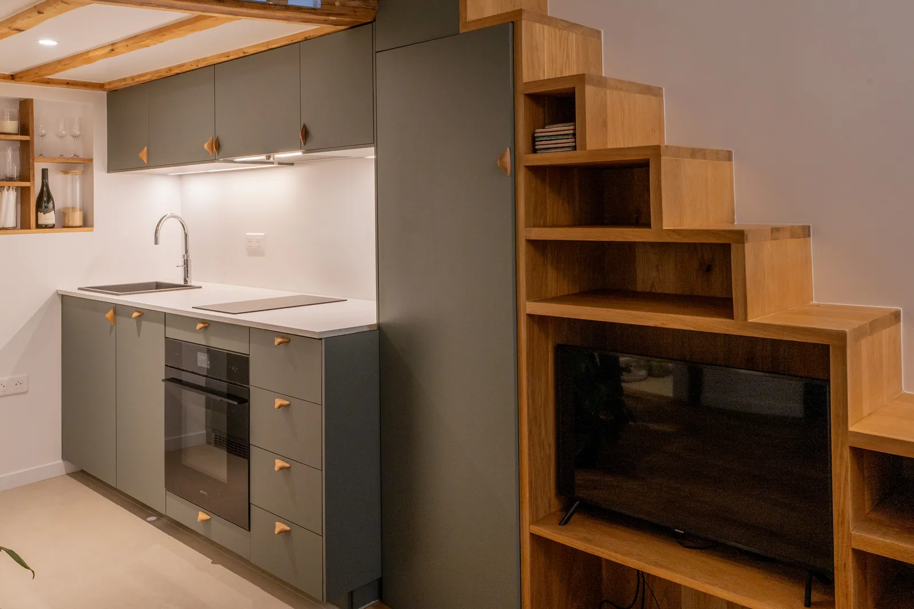
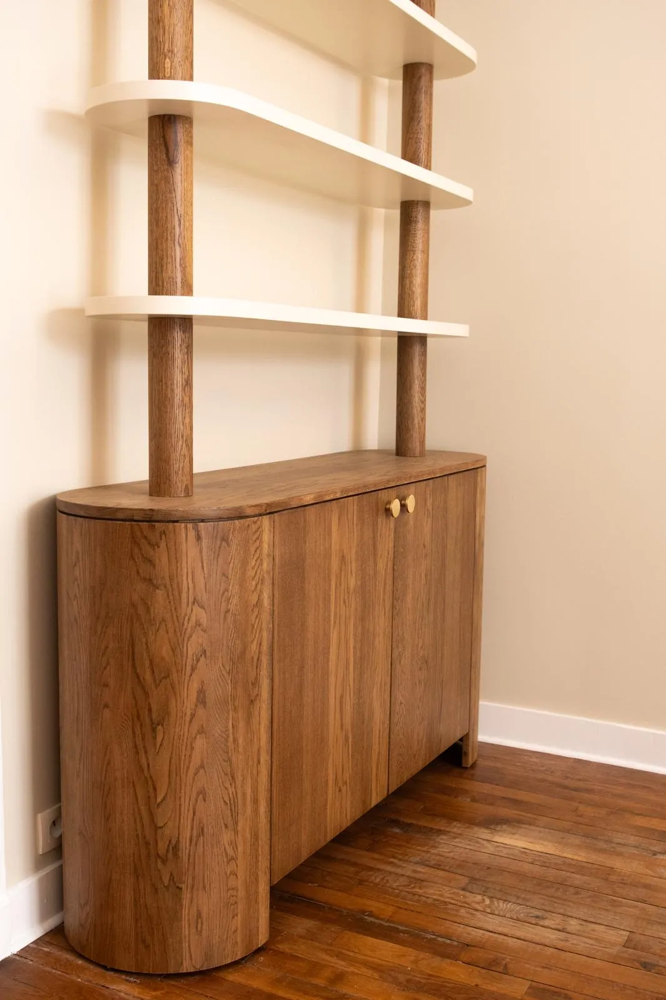

Stouls Studio / Portfolio
Stouls Studio Portfolio
Places designed for the people who live in them.

Opéra Apartment
Paris, 9th arrondissement, 90 m²
Odéon Studio
Paris, 6th arrondissement, 26 m²
Saint-Michel Studio
Paris, 6th arrondissement, 24 m²
Saint-Germain-des-Prés Studio
Paris, 6th arrondissement, 27 m²
Champ-de-Mars Studio
Paris, 7th arrondissement, 30 m²
Montrouge Apartment
Montrouge, south of Paris, 46 m²
Montmartre Apartment
Paris, 18th arrondissement, 27 m²
Lamarck Apartment
Paris, 18th arrondissement, 45 m²
Grands Boulevards Apartment
Paris, 10th arrondissement, 30 m²
Levallois-Perret Apartment
Levallois-Perret, west of Paris, 55 m²
Boulogne Apartment
Boulogne, west of Paris, 55 m²
Bagnolet Apartment
Bagnolet, east of Paris, 65 m²
Country House in Burgundy
Burgundy, France, 150 m²
House on Sifnos
Sifnos, Greece, 160 m²
Montparnasse Apartment
Paris, Montparnasse, 45 m²
Neuilly-sur-Seine Apartment
Neuilly-sur-Seine, west of Paris, 90 m²
Custom Furniture

Plans and Elevations
Your project
Tell me what you are looking for in Paris, or send me the listing of an apartment you are considering.
More work is on Instagram @stouls_studio.